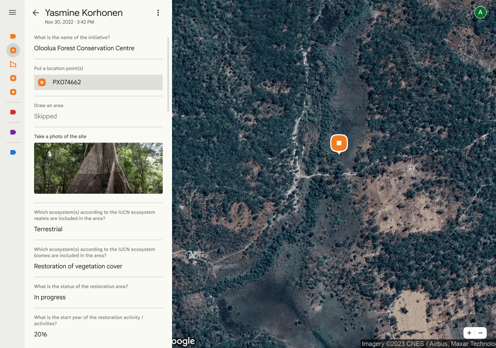
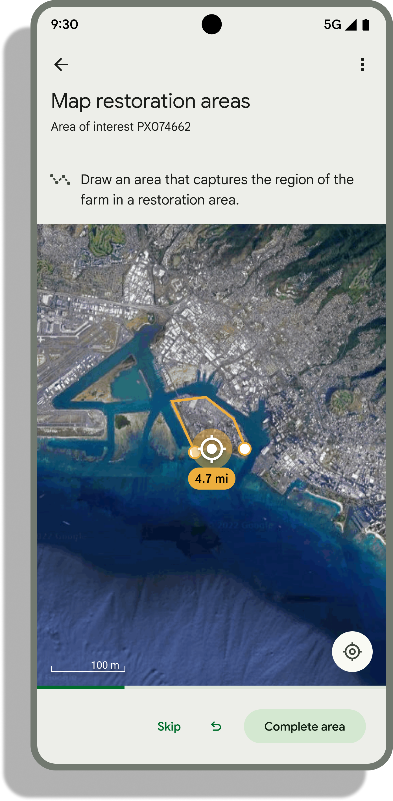

59,000+
Plots & polygons mapped
Georeferenced smallholder parcels and restoration boundaries across Africa and Southeast Asia.
Ground is an open-source, offline-capable field data collection platform built in collaboration with the Food and Agriculture Organization of the United Nations (FAO) under the Open Foris initiative, Google, and global non-profit partners. Designed for non-technical users with little to no special training, Ground connects frontline community observations with cloud-based mapping and sustainability analytics.
Deployed alongside international agencies, research institutes, and farmer cooperatives


Web survey console: Organizers design surveys, manage team access, and inspect geotagged field submissions over high-resolution satellite imagery.
Georeferenced smallholder parcels and restoration boundaries across Africa and Southeast Asia.
Registered under extreme rural connectivity constraints with ADISCO and the International Trade Centre.
Collected with CERSGIS, SERVIR West Africa, WRI, and YouthMappers to train open climate and crop models.
Over 300 cooperative leaders, forest rangers, and ministry staff trained to run independent campaigns.
Remote sensing and planetary models can detect landscape change from orbit, but protecting forests, restoring ecosystems, and securing smallholder livelihoods require trusted verification on the ground. Ground provides a "just right" geospatial platform so frontline communities and institutions can collect rigorous field data without specialized GIS training.
Global regulations such as the EU Deforestation Regulation (EUDR) and voluntary forest conservation frameworks (jREDD, Tropical Forest Forever Facility) require plot-level georeferencing for forest-risk commodities like cocoa, coffee, rubber, and timber. Ground enables cooperatives and field teams to map farm perimeters and points offline so smallholders aren't excluded from international markets.
Instead of relying on external GIS contractors, Ground is designed so farmer cooperatives, Indigenous Peoples, and local community organizers can design and manage their own mapping campaigns. By putting spatial data ownership directly in community hands, local producers strengthen land stewardship and unlock new economic opportunities.
Conservation practitioners and national ministries use Ground to delineate restoration areas, record IUCN ecosystem biome classifications, and capture geotagged photo evidence over time—supporting transparent reporting to the UN Decade on Ecosystem Restoration Monitoring (FERM) and national forestry initiatives.
Accurate land-use and land-cover maps depend on verified ground truth—especially for shaded agroforestry systems and smallholder mosaics that look ambiguous from satellite imagery alone. Ground collects GPS-verified polygons with explicit location accuracy and altitude metadata to train and validate machine learning models for the Forest Data Partnership and FAO geospatial teams.
From national smallholder registries in East Africa to open-science agroforestry campaigns in West Africa and multi-commodity traceability pilots in Southeast Asia, Ground is delivering measurable environmental and economic impact today.
Led by the Association pour l'Entraide et le Développement Communautaire (ADISCO) and the International Trade Centre (ITC), field teams deployed Ground across rural coffee-growing provinces operating under severe connectivity constraints. Reliable offline data capture and background synchronization enabled rapid registration of smallholder growers to safeguard their access to global export markets.
During the Lacuna Fund Climate & Forests project, a consortium of ~30 enumerators—including CERSGIS staff, University of Ghana students, and YouthMappers from the University of Ghana and University of Cape Coast—mapped cocoa farms alongside shade-tree and management attributes. The data trained and validated Forest Data Partnership (FDaP) cocoa models, with an open CC-BY 4.0 subset published on Zenodo.
Following initial pilots with Agrisolutions Enterprises Ltd (ASEL), Palladium Group, and ITC that mapped 6,000 coffee plots, an FAO workshop in Nandi County trained local cooperative representatives to design and coordinate their own surveys. Within two months, four selected coordinators independently mapped over 2,000 additional plots—reaching ~60% coverage of Toroton (1,400/2,100 plots) and Meteitei Set Kobor (400/700 plots) Farmers Cooperative Societies.
In Viet Nam, FAO, local forest rangers, enterprises (Duc Hien Co., Quang Tri Trading Corp.), and cooperatives (Bon Phuong, Phat Loc, Hiep Phat) are running Training of Trainers (ToT) and georeferencing campaigns across coffee (41 plots), timber (38 plots), and rubber (25 plots). Globally, field geometries collected in Ground feed directly into Open Foris WHISP to evaluate deforestation risk across millions of smallholder parcels.
Ground's training-of-trainers model transfers survey design and geospatial data management skills directly to national ministries, university chapters, and farmer unions—with expanding institutional collaborations across Kenya (DRSRS), Sierra Leone (Produce Monitoring Board & European Forest Institute), Colombia (AgroComodities), and Cameroon (CICC & EFI).
Trainees equipped in national forestry monitoring workshops.
Cooperative representatives trained in survey creation and coordination.
Ministerial staff and cooperative union leaders trained for multi-county rollout.
Ground combines a web application for survey creation and data management with an Android app built for fast, accurate map-based data collection in remote environments.
First-class support for GPS points and walked or hand-drawn polygons paired with text, numeric, multiple-choice, date/time, and photo capture tasks.
Crafted using Google's Material Design 3 system for high-contrast legibility in bright sunlight and intuitive navigation with minimal training.
Export clean GeoJSON and CSV datasets for downstream GIS, WHISP, or Earth Engine workflows, and deploy on your own Firebase and Google Cloud project.
Ground is released under the Apache 2.0 License as part of the Open Foris initiative. We welcome contributions from developers, researchers, and conservation practitioners worldwide.
Contains Ground's hosted components, including the Angular web survey console, Firebase Cloud Functions, Firestore security rules, and shared TypeScript and Protocol Buffer schemas.
Contains the native Android application for offline-first map navigation, GPS point and polygon boundary capture, offline satellite tile caching, and background synchronization.
Join the Ground announcements mailing list for updates on field deployments and releases, or read the Developer's Guide to set up a local emulator and contribute pull requests.